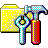

A Beginner's Guide to Crafting a Blog with Metalsmith 
An earlier version of Neustadt.fr was built with Metalsmith, a node.js-based static site generator. In this tutorial, I show you how you can build your own Metalsmith blog from scratch.
- Parimal Satyal, 30 September 2016. Original background art by Maria Belousova.
Neustadt.fr started, as many things have, with a post on Hacker News. I stumbled upon Jendrik Poloczek's very simple, readable website after one of his articles made it to the front page. His website is apparently powered by Pelican, a Python-based static site generator. I didn't really know what that meant but I was intrigued.
This came at a time when I was getting increasingly frustrated with the wastefulness, bloat and disregard for privacy in modern web design. Not to mention the layers and layers of dependencies. People who want a simple website today often end up with a dynamic database-dependent WordPress blog running a theme that has widgets, infinite scroll, lightbox, a media gallery, Google Analytics and jQuery animations built-in. And all they wanted was to post a few articles and photos every month. It's absurd.
Why go static?
Simplicity and speed. Call it nostalgia but I like to keep things small, simple and manageable. There's something beautiful about a website in standard HTML, CSS and (minimal) Javascript that can be hosted pretty much anywhere. Even Neocities.
With a static website, you don't have to worry about databases, SQL injections, security patches and server environments. Need to change hosts? Migrating is as simple as copy/paste. Then there's the speed. Between the caching and not having to query databases to dynamically generate pages every time, you end up with something very robust. A friend who recently went static had an article make it to the front page of Hacker News, bringing in about 3 GB of traffic in one day. Since he was only serving plain HTML and CSS, his server handled it just fine.
Why Metalsmith?
Before choosing Metalsmith, I looked into Python-based Pelican, Ruby-based Jekyll and Middleman, node.js-powered Wintersmith and Golang-powered Hugo. They are all capable static site generators with active developer and user communities so you'd really be okay with any of them.
What I loved about Metalsmith is that it does nothing out of the box. It just takes a source directory and spits everything out into a destination directory. If you want it to do anything meaningful, you need to build your own workflow with plugins. And in Metalsmith, everything is a plugin.
Instead of having to disable features I don't need, I could simply add the ones I want from a growing ecosystem of over a 130 plugins. Markdown, drafts, permalinks, code highlighting, templates - they're all optional plugins.
Requirements and audience
This tutorial is for beginners, so it'll be quite detailed and verbose.
Our example blog will be extremely simple: an index page with a list of all articles, a page for each article and an about page. It'll be the personal website of fictional astrophycisist (and retro music enthusiast) Tara Himmels, who'll name her blog Electroniq.
I assume only that you are familiar with basic HTML/CSS and are at least a little bit comfortable using the command line (or not scared of it, at the very least). You'll also need to be familiar with very basic Javascript syntax. If you're not, don't worry; I'm no programmer either, you can learn as you go.
We'll be writing our posts in Markdown, a simple markup language that lets you format your posts easily without having to throw in HTML tags everywhere. It then converts it to HTML for you. If you don't know it, you can learn it in 5 minutes.
You don't need to know node.js. I didn't when I started.
To complete this tutorial, you will need:
- A computer running Windows, Mac OS X or almost any UNIX-based OS
- Shell access (like Terminal on Mac)
- A text editor (like Brackets or vim)
- A web browser
- A web host if you want to go live (we'll talk about this later)
I usually also use Git for version control. But let's keep things simple for this tutorial.
Installing Node.js and Metalsmith
If you're running Windows or Mac OS X, the easiest way to install Node.js is to download and install the precompiled binaries (or via Homebrew on the Mac). If you're running Linux, you can use your distro's package manager.
This installs both Node.js and npm, the node package manager that we'll be using to install all our plugins.
Once you have npm installed, you can go ahead and install metalsmith. Before you do so, let's create a project directory. On the command line, type this (omitting the $, which is just a convention to denote the prompt):
$ mkdir electroniqThen cd into that directory and make a new folder called src.
$ cd electroniq
$ mkdir srcWe'll use this folder to store all our source files: our posts in Markdown (.md) and our site assets (.css, .js and image files). But first, we'll need a package file for all our dependencies (every plugin in Methalsmith is a dependency). We'll write this in a format called JSON.
On your root folder (electroniq, which I'll refer to simply with the conventional forward slash /) , create a file called package.json with this text:
{
"name": "electroniq",
"version": "1.0.0",
"private": true,
"description": "Electroniq is astrophysicist (and retro music enthusiast) Tara Himmels' blog.",
"author": "Tara Himmels"
}For now, we're just seting up your node.js environment with some meta information. But the package.js file does a lot more; it holds everything together. Every time we use a plugin, we'll need to declare it in this file. Luckily, this can be automated; let's install a plugin to see it in action.
We'll start by installing metalsmith itself. On your root folder, type:
$ npm install metalsmith --saveThis installs metalsmith and creates a node_modules folder with all of metalsmith's dependencies. The --save flag automatically also adds metalsmith to your package.json file; if you open it now, it'll look something like this:
{
"name": "electroniq",
"version": "1.0.0",
"private": true,
"description": "Electroniq is astrophysicist (and retro music enthusiast) Tara Himmels' blog.",
"author": "Tara Himmels",
"dependencies": {
"metalsmith": "^2.2.0"
}
}We now have nodejs, npm and Metalsmith installed. We also have a project directory, a source directory, a package dependency file and a folder that'll hold all of our node modules.
Now to start forging.
A basic workflow
First things first, we need a build file to define our metalsmith workflow -- a succession of plugins. Create a file called build.js and type/paste this in:
var metalsmith = require('metalsmith');
metalsmith(__dirname)
.metadata({
site: {
name: 'Electroniq',
description: "Electroniq is astrophysicist (and retro music enthusiast) Tara Himmels' blog."
}
})
.source('./src')
.destination('./public')
.build(function (err) {
if (err) {
console.log(err);
}
else {
console.log('Electroniq built!');
}
});A basic Metalsmith setup can be more compact than this, but we've added a few things that are important. Let's go over this line by line. If you know what's going on here, feel free to skip ahead.
First, we require metalsmith itself:
var metalsmith = require('metalsmith');We'll need to do this for every plugin we use. Most dependencies on your package.json file will also need to be declared/required here.
Next, we call the main metalsmith() function itself and define metadata that'll be useful later. These values can be called from any of our templates. For now, we'll just include a name that we can later use as in <title> tag of our blog.
Then, we define our source folder (./src), a destination folder where Metalsmith will output our static site (./public), and call the build() function to run our workflow.
We've also included basic error catching. Should Metalsmith encounter an exception, it'll be appended to the Javascript console, which will be useful for debugging. Otherwise, it'll post a message to the Termnial indicating that the build was successful.
Now, we'll create a bridge between package.json to our newly-forged build.js file. Open package.json and add the main and scripts bit at the end, like so:
{
"name": "electroniq",
"version": "1.0.0",
"private": true,
"description": "Electroniq is astrophysicist (and retro music enthusiast) Tara Himmels' blog.",
"author": "Tara Himmels",
"dependencies": {
"metalsmith": "^2.2.0"
},
"main": "build.js",
"scripts": {
"prestart": "npm install",
"start": "node ."
}
}These lines we added tells node that build.js is the main entry point for our project. We then define two scripts; the start bit essentially just tells node to run this main script and the optional prestart bit just installs or updates all your dependences first.
This is what your electroniq directory should now look like :
.
├── node_modules/
│ └── ...
├── src/
├── build.js
└── package.jsonYou now have a basic Metalsmith setup. It doesn't do anything yet (other than copy the nothingness in your source directory to your destination directory), but we can technically build our website.
Give it a go:
$ npm startIt's nice to get that little "Electroniq built!" message on the console, isn't it? Now let's make Metalsmith actually do something.
Markdown and Frontmatter
Using Markdown to write your posts makes sense: you can format text, the text remains readable and the whole thing converts easily to standard HTML. In fact, this tutorial is written in Markdown.
To use Markdown, you need to install the plugin first :
$ npm install metalsmith-markdown --saveOpen build.js. First, before using the plugin, we must require it at the start of our file:
var metalsmith = require('metalsmith');
var markdown = require('metalsmith-markdown');
// ...Now add Markdown between .destination() and .build() like so:
// ...
.source('./src')
.destination('./public')
.use(markdown())
.build(function (err) {
// ...And that's it. This is how you add plugins to your workflow.
Of course they usually take parameters, but we'll see that later. It's important to remember that the order of plugins is usually important; think of it as a pipeline. Each action passes on its results to the next.
Now let's write a sample article in Markdown. We'll title it "Hello Universe".
Create a new file in your src folder called hello-universe.md:
---
title: "Hello World"
date: 2016-10-12
blurb: An introduction to our blog Electroniq
---
## Welcome to Electroniq
*Electroniq* is a new blog about space, distant galaxies and black holes.
We'll talk about [the holographic principle](https://en.wikipedia.org/wiki/Holographic_principle), dark matter and the beauty of space in infrared light.
This blog is run by **Tara** and **Elias**.The bit at the top between the --- is called fontmatter. Here, it's in YAML but that's not too important. These are just metadata that we'll be able to access in the template. Here we've included a title, a date and a blurb. You could also use add these kind of key/value pairs for keywords, categories, author name, modified date… you get the idea.
We don't have a template to display this content yet, but since we added Markdown to our workflow, Metalsmith will still be able to convert it to HTML. Build your project to check:
$ npm startThis will create a new folder called public with a file hello-universe.html. Your root directory should now look like this:
.
├── node_modules/
│ └── ...
├── src/
│ └── hello-universe.md
├── public/
│ └── hello-universe.html
├── build.js
├── Makefile
└── package.jsonOpen the generated hello-universe.html file on your editor. It will simply contain:
<h1 id="welcome-to-electroniq">Welcome to Electroniq</h1>
<p><em>Electroniq</em> is a new blog about space, distant galaxies and black holes.</p>
<p>We'll talk about <a href="https://en.wikipedia.org/wiki/Holographic_principle">the holographic principle</a>, dark matter and the beauty of space in infrared light.</p>
<p>This blog is run by <strong>Tara</strong> and <strong>Elias</strong>.</p>Metalsmith has converted your article from Markdown into HTML. This is a good start but our page is incomplete. There's no head tag or navigation or any structure, and we're not using information in our YAML frontmatter.
What we need is a template to display this page. Let's make one now.
Templates
One of the reasons to use a static site generator is to be able to use templates with HTML markup and variables we can reuse on different pages without having to repeat any of it.
Metalsmith comes with a plugin that lets you write your templates in pretty much any templating engine. If you don't know what these are, don't worry. They're a way we can access data and variables from within our templates. For this project, we'll use Handlebars.
Let's start by installing the metalsmith templating plugin, called metalsmith-layouts:
$ npm install metalsmith-layouts --saveWe'll also install Handlebars while we're at it:
$ npm install handlebars --saveWe know that these dependencies will automatically be added to our package.json file. Now let's add them to our workflow. Open build.js and first require our two new packages:
var metalsmith = require('metalsmith');
var markdown = require('metalsmith-markdown');
var layouts = require('metalsmith-layouts');
var handlebars = require('handlebars');
// ...And then add them to our workflow:
// ...
.source('./src')
.destination('./public')
.use(markdown())
.use(layouts({
engine: 'handlebars',
directory: './layouts',
default: 'article.html',
pattern: ["*/*/*html","*/*html","*html"]
}))
.build(function (err) {
// ...This snippet tells Metalsmith to use Handlebars templates, look for them in the layouts directory and use a template called article.html by default. We also define a pattern for layout files; in this case, they're any files with the .html extension.
Let's create our layouts directory and write our default template now:
$ mkdir layoutsInside this folder, create a file called article.html with these contents:
<!DOCTYPE html>
<html>
<head>
<meta charset="utf-8">
<title>{{ title }} - {{ site.name }}</title>
<meta name="description" content="{{ blurb }}" />
</head>
<body>
<article>
<h1>{{ title }}</h1>
<div class="meta">
{{#if date}}Published: {{ date }}{{/if}}
</div>
{{{ contents }}}
</article>
</body>
</html>It's a pretty standard HTML page, except for the Handlebars tags in {{ }}. These are placeholders that will be replaced by actual content in the static output. For example, we want the name of our website in our page's <title>, along with the title of the article.
Remember we already defined the site name in build.js as global metadata, like so:
// ...
metalsmith(__dirname)
.metadata({
site: {
name: 'Electroniq',
}
})
// ...In the template, we can access this information via the {{ site.name }} variable. The other tags — title and and date — come from our article's frontmatter.
The article itself can be accessed quite through the {{{ content }}} tag. We're using three curly brackets here instead of the usual two because we don't want Handlebars to escape any characters (Markdown does that for us).
There's also an {{#if date}} conditional tag there, but we'll explain that a bit later.
To see what Metalsmith generated for us with this template, build the project:
$ npm startAnd open public/hello-universe.html in your editor. You should see something like this:
<!DOCTYPE html>
<html>
<head>
<meta charset="utf-8">
<title>Hello World - Electroniq</title>
<meta name="description" content="An introduction to our blog Electroniq" />
</head>
<body>
<article>
<h1>Hello World</h1>
<div class="meta">
Published: Wed Oct 12 2016 02:00:00 GMT+0200 (CEST)
</div>
<h2 id="welcome-to-electroniq">Welcome to Electroniq</h2>
<p><em>Electroniq</em> is a new blog about space, distant galaxies and black holes.</p>
<p>We'll talk about <a href="https://en.wikipedia.org/wiki/Holographic_principle">the holographic principle</a>, dark matter and the beauty of space in infrared light.</p>
<p>This blog is run by <strong>Tara</strong> and <strong>Elias</strong>.</p>
</article>
</body>
</html>So we now have an article page.
What we don't have is an index page that lists all the articles we publish. To do this, we'll need a plugin called metalsmith-collections. Go ahead and install that now.
$ npm install metalsmith-collections --saveAs always with a new plugin, require it and then add it do your workflow in build.js like so:
// ...
var collections = require('metalsmith-collections');
// ...
.source('./src')
.destination('./public')
.use(collections({
articles: {
pattern: 'articles/**/*.md',
sortBy: 'date',
reverse: true
},
}))
.use(markdown())
.use(layouts({
// ...A collection is like a filter based on certain criteria. Here, we'll simply want a list of all our articles in reverse-chronological order (so newest first). The pattern: 'articles/**/*.md' bit is important; it tells the plugin that it should consider any Markdown files in the /src/articles directory part of the collection.
But that folder doesn't exist yet; our one article lives in /src/. Let's fix that now. Create our articles folder under /src:
$ cd src
$ mkdir articlesNow let's move our existing article there.
$ mv hello-universe.md articlesWhile we're at it, let's add a second article. You should be able to do this on our own. Simple create a new file in the articles directory with any filename that ends in .md.
So, for example, you could write about Spooky Action at a Distance and name the file spooky-action.md :
---
title: "Spooky Action"
date: 2016-10-14
blurb: "What would Einstein make of quantum entanglement today?"
---
## Spooky Action at a Distance
Some text here.Ok, we now have two articles. This is starting to look more like a blog.
But we don't have a layout for the index page quite yet. Let's create that now. Switch to our layouts directory create a copy of our article page and name it index.html.
$ cd ../layouts
$ cp article.html index.htmlChange the code so it looks like this:
<!DOCTYPE html>
<html>
<head>
<meta charset="utf-8">
<title>{{ site.name }}</title>
<meta name="description" content="{{ site.description }}" />
</head>
<body>
<h1>{{ site.name }}</h1>
<ul class="recent">
{{#each articles }}
<li>
<div class="title"><a href="{{ path }}">{{ title }}</a></div>
<div class="date">{{ date }}</div>
</li>
{{/each}}
</ul>
</body>
</html>In the <head> section, we've removed the bit with {{ title }}, which only exists for articles and left just the {{ site.name }} bit and we've switched out the {{ blurb }} for {{ site.description }}.
The bit in between the <body> tags introduces new Handlebars code:
{{#each articles }}
...
{{/each}}This is a loop of all articles (the collection we previously defined). So this page will just be a list of all articles we write, with a title and a date for each.
However, before Metalsmith is able to generate our index page in our /public directory, we need a file called index.md file in the /src folder. Create this file now:
---
layout: index.html
---Partials
It's a good start but we're repeating code in our two template files. This is not ideal because if we ever want to change something in the header, we'd need to change it on every template that contains it. To avoid this, we can split reusable code into smaller sub-templates, or partials, that we can call from our main templates.
Let's create two partials, one for the header and one for the footer. Metalsmith doesn't impose any rules on where you put these files and what you call them; we're free to structure it any way we want. We'll keep things logical and have them live in a folder called partials in our layouts folder.
Create the folder now:
$ cd layouts
$ mkdir partialsIn this folder, create a file header.html that contains:
<!DOCTYPE html>
<html>
<head>
<meta charset="utf-8">
<title>{{#if title }}{ {title }} - {{/if}}{{ site.name }}</title>
<meta name="description" content="{{#if blurb}}{{ blurb }}{{else}}{{#if description}}{{ description }}{{else}}{{ site.description }}{{/if}}{{/if}}" />
</head>
<body>This is the bit that goes at the top of every file. You'll notice that we've again replaced the title from {{ site.name }} to a slightly more complicated-looking {{#if title }}{ {title }} - {{/if}}{{ site.name }}. The meta description has something similarly complex. Why?
We're going to call the same header partial from our index page as well as our article page but there are small differences in our header between these templates. What we're doing here is using conditional tags to show different information depending on whether the page is an index page or an article page.
The conditional if tag in handlebars looks like this:
{{#if title }}
{{ title }}
{{/if}}All this says is that if the variable title exists, display it. But we know that title variable only exists for article pages (in the YAML frontmatter), not for index pages. So now our very smart header partial prepends the article title with a dash to the title if it's called from the article page.
Same thing for meta description, except this is an if... else conditional block:
{{#if blurb}}
{{ blurb }}
{{else}}
{{ site.description }}
{{/if}}As you've by know figured, this uses the blurb variable if one exists in the frontmatter. Else, it'll just use the site description we defined in our build.js file. This again means that the meta description will be the blurb for an article page and the site.description and for the index page, which makes sense.
Now create a file called 'footer.html' that contains simply:
</body>
</html>Nothing too surprising here.
Now we have to let Metalsmith know that we've created these partials so we can invoke them from inside our templaces. To do this, open build.js and modify the parameters for our layouts plugin so they look like this:
.use(layouts({
engine: 'handlebars',
directory: './layouts',
default: 'article.html',
pattern: ["*/*/*html","*/*html","*html"]
partials: {
header: 'partials/header',
footer: 'partials/footer'
}
}))Now that our partials are defined, it's time to use them.
Edit both article.html and index.html and replace the header that's there:
<!DOCTYPE html>
<html>
<head>
<meta charset="utf-8">
<title>{{ site.name }}</title>
<meta name="description" content="{{ site.description }}" />
</head>
<body>with just this one line, which is Handlebars syntax for calling partials:
{{> header }}Do the same with the footer, replacing
</body>
</html>with:
{{> footer }}We're almost ready. The only thing missing now is a way to navigate from an article page back to the index page. Open layout/article.html and add the <header> block between {{> header }} and <article> so it looks like this:
...
{{> header }}
<header>
<a class="back-to-index" href="../index.html">← Index</a>
</header>
<article>
<h1>{{ title }}</h1>
...This just adds a ← Index link at the top of the page (a little like on this website).
Now try building your blog again and moving between an article page and the index. (Moving the other way might not work yet, we'll fix this when we get to the permalinks bit.)
Adding an About Page
Finally, let's add an About page. This is simple. Just create an about.md file in the /src directory. Here too, you can add any key/value pair in the YAML frontmatter. Or remove them, as we've done with date, which we won't need.
---
title: "About"
blurb: "Tara Himmels is an astrophysicist and retro music enthusiast. Electroniq is her blog."
---
Hello, my name is Tara Himmels.
If you'd like to get in touch with me, you can contact me [via email](tarahimmels@example.com).
In the meantime, I do hope you enjoy your day on this *pale blue dot* that is our home.Let's edit to the footer so there's a link to this page; people wouldn't be able to get to it otherwise!
If you open /layout/partials/footer.html in our text editor, it should look like this :
</body>
</html>Change it to this:
<nav>---<br /><a href="/about">About this blog</a></nav>
</body>
</html>You could build your blog now and view your page at /about.html. It'll have used our default 'article.html' template. But you notice that our in the footer doesn't actually work (yet).
This is because our about page actually lives at /about.html and not /about, which is prettier. Let's fix that now.
Routes and Pretty Permalinks
Right now, our index page lives at /index.html, the about page at '/about.html' and any blog post at /articles/title-of-the-article.html. Ideally, we wouldn't need the .html bit.
This is the URL structure we want:
- Home page:
/ - About page:
/about - Article page:
/title-of-the-article
Notice that these are root-relative links, / being the root. The root could really be a number of other things: a top-level domain like https://electroniq.org/; a subdomain like https://electroniq.example.org/; heck, even a local address like localhost:8081/ (we'll see this again in the next section).
To enable this kind of routing, we'll need the metalsmith-permalinks plugin.
This will allow us to write custom URLs: with a date, maybe, or an id or an author name. As long as this information exists in the front-matter, you can use it in your URL. In our case, we'll only be using the title. This will give use the URL structure we want:
Let's install this plugin:
$ npm install metalsmith-permalinks --saveThen open build.js and require it:
var permalinks = require('metalsmith-permalinks');And finally, add it to our workflow, right before layouts:
// ...
.use(markdown())
.use(permalinks({
relative: false,
pattern: ':title',
}))
.use(layouts({
// ...And that's it. The pattern of our URLs is straightforward, we'll simply use the title of the post as provided in the frontmatter. So a title like "Spooky Action" will become /spooky-action.
We've also set relative to false. If this were set to true, Metalsmith would make a copy of any resource on the source folder in all sub-folders. But in our case, this isn't necessary.
Build your Metalsmith blog now to see your new URLs in action:
$ npm startThis is what your root directory should look like now:
.
├── node_modules/
│ └── ...
├── layouts/
│ └── index.html
│ └── articles.html
│ └── reviews.html
│ └── partials/
│ └── footer.html
│ └── header.html
├── src/
│ └── articles/
│ └── hello-universe.md
│ └── spooky action.md
│ └── about.md
├── public/
│ └── about-tara-himmels/
│ └── index.html
│ └── hello-world/
│ └── index.html
│ └── spooky-action/
│ └── index.html
├── build.js
└── package.jsonAs you can see, the /public folder now represents every page as a folder with its own index.html file.
Watching, (local) serving and drafts
You'd probably want to preview your articles before you publish them. You could, of course, open the generated index.html in your browser and reload your page everytime you change something, or you could have live preview.
To do this, Metalsmith would need to watch your folder and rebuild any files in which it detects changes and serve these pages with its own little webserver. Thankfully, Metalsmih comes with a pair of plugins that do just this: metalsmith-watch and metalsmith-serve.
Start by installing them:
$ npm install metalsmith-watch --save
$ npm install metalsmith-serve --saveSetting them up is super easy. Open your build.js file and first require these plugins:
var serve = require('metalsmith-serve');
var watch = require('metalsmith-watch');Then just add them to your workflow around the end, right before the build() function:
// ...
.use(serve({
port: 8081,
verbose: true
}))
.use(watch({
paths: {
"${source}/**/*": true,
"layout/**/*": "**/*",
}
}))
.build(function (err) {
// ...The serve command essentially tells Metalsmith to serve the pages using a local server running on port 8081. The 'verbose' option will output status updates to the command line (everytime it detects a change to a file, for example; this is helpful for when you've set a wrong path and the server responds with a 404).
The watch commands takes paths as parameters; these are essentially folders it should watch for changes. We're going to include the source folder (obviously) and our layout folder.
Build your Metalsmith blog now to test our local server:
$ npm startNow go to address http://localhost:8081 on your local browser and you should see your index page.
I should mention that while the serve/watch combo works really well when you're editing single articles, in my experience you shouldn't rely on it for changes to your template file. If you notice anomalies, just rebuild your blog.
To do that, you'll need to first kill your server by hitting Ctrl + C (on Unix, Mac or Windows). This interrupts the current process. After that, it's the usual:
$ npm startYour very simple Metalsmith blog is now ready!
Going Live (aka. Deploying)
This is where things get really fun.
With a static website, going live is as simple as copying your /public folder to your remote public_html (or equivalent) folder. So your deployment process involves invoking npm start and uploading your public folder to your remote server. This could be any server: on Neocities, GitHub Pages or any old shared hosting account.
You don't need PHP, Ruby, node, CGI, MySQl or anything fancy; just any old web server will do.
For Neustadt.fr, I run an Nginx server on a Digital Ocean droplet and deploy using this one-line shell script I've named deploy.sh:
#!/bin/sh
rsync -av -e ssh public/* parimalsatyal@139.59.134.246:/var/www/neustadt.frAll it does is use the rsync command to sync the local /public folder with the public folder on my remote s (/var/www/neustadt.fr), via SSH.
This way, I can update and make as many changes as I please locally and when I'm ready, deploy with just two commands:
$ npm start;
$ ./deploy.shFinal Thoughts
You can browse the completed example project (exactly as we left it here) on GitHub.
This of course is only a start. We've built an exceedingly basic website that doesn't even have CSS styling. We've only scratched the surface of what is possible. But if you've come this far, you already know how to set up a Metalsmith project, edit your templates and add new pages.
If you'd like to go further, I'd recommend checking out the Awesome Metalsmith list, which also has links to other tutorials. If you have questions, the Metalsmith Slack channel is a good place to them (I find that woody is often there is very helpful).
This website itself is also built with Metalsmith. If you'd like, you can poke around my Metalsmith setup on GitHub.
I hope this tutorial has been of help to you. If you spot errors or would like to suggest an edit, please get in touch via email (parimal-at-neustadt-dot-fr). Or feel free to submit a pull request to this article on GitHub . Thanks go out to Metalsmith and the active user/developer community for building and maintaining this beautiful static website generator.
— ← back home